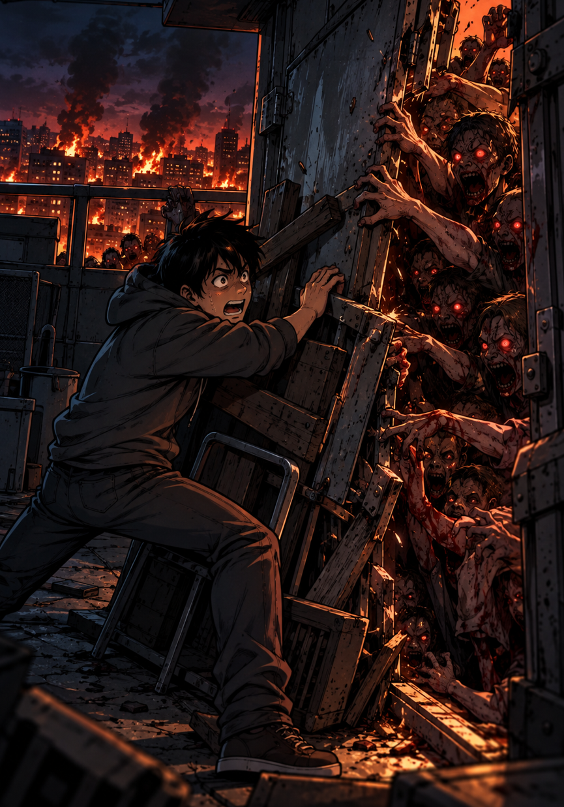

3/3
Camino Final: El Cerco Final
🔊 Narración:
Cierras la puerta de metal del tejado y la refuerzas con todo lo que encuentras. Mientras la horda golpea la chapa, escuchas cómo las bisagras comienzan a ceder.
Miras al cielo esperando un rescate, pero solo ves el humo de la ciudad en llamas. La puerta finalmente se rompe y la horda entra. No hay a dónde huir.
♦ ───── ♦
💀 FINAL TRÁGICO
Atrapado en la penumbra